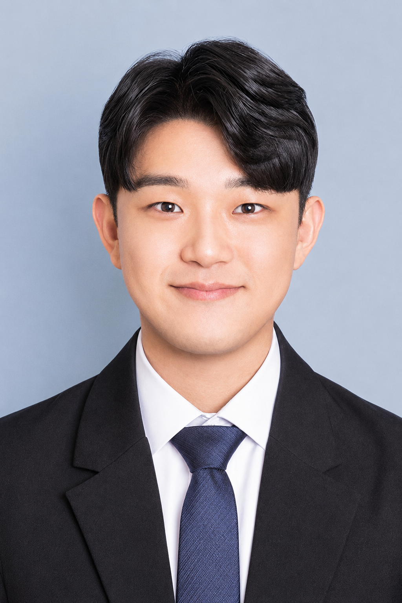
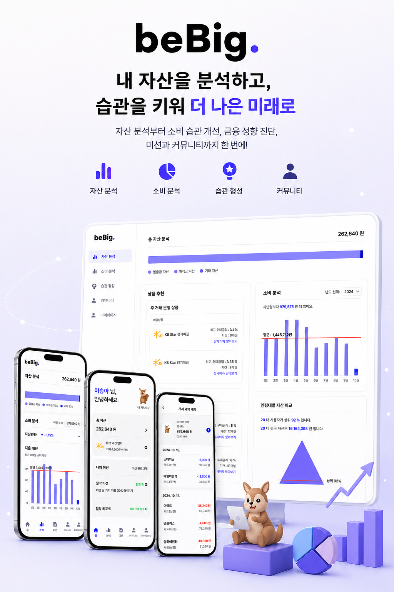
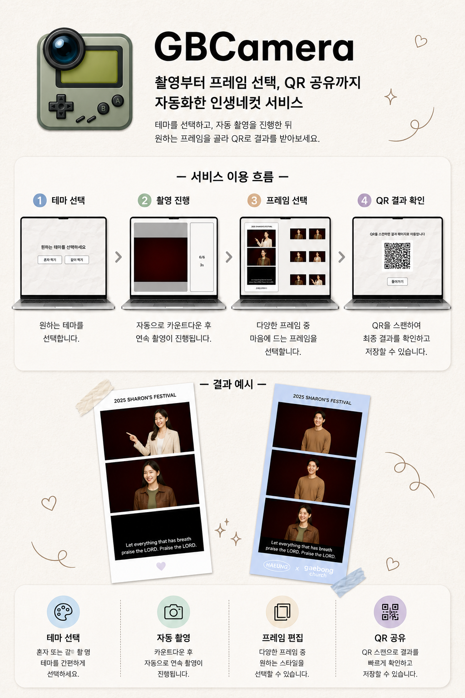
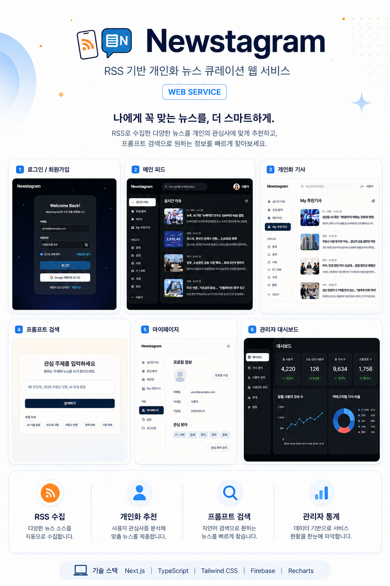
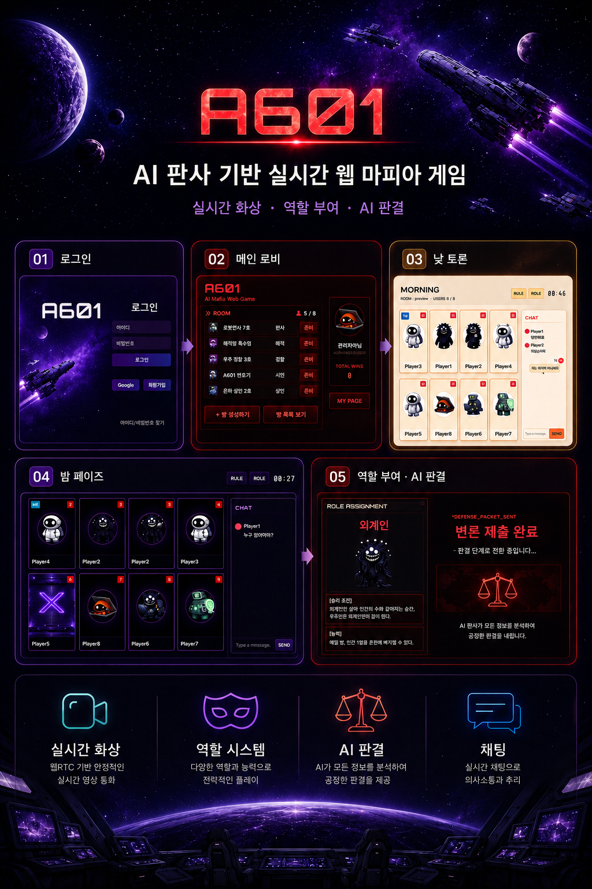
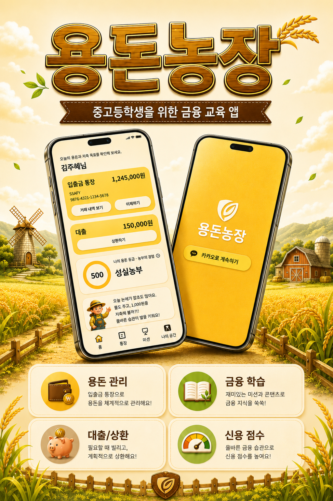
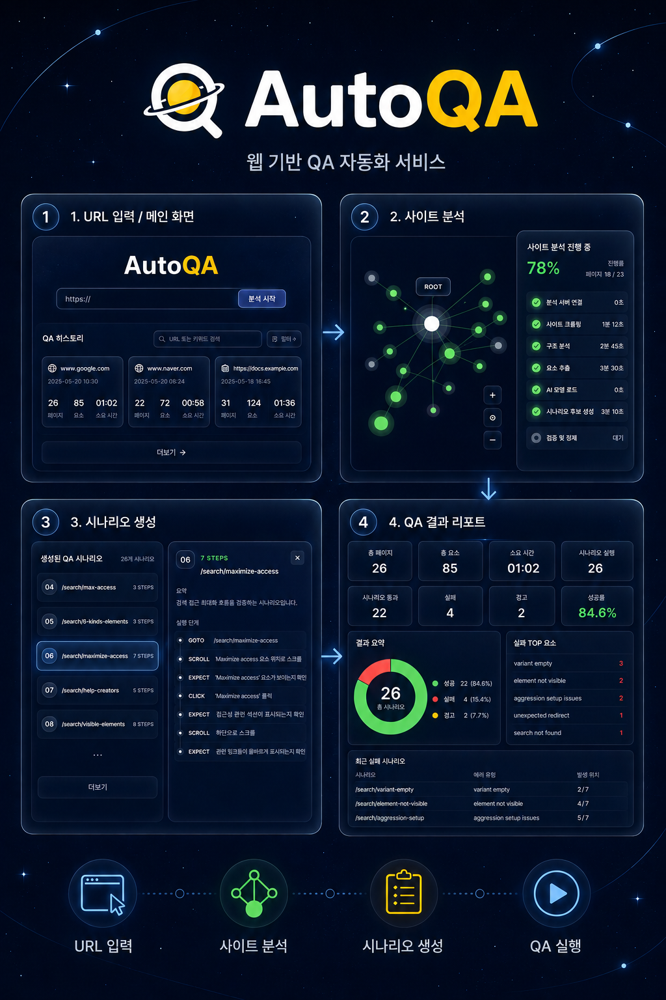

Backend 중심 구현
단순 CRUD보다 상태 전환·이력 추적·권한 경계·외부 API 실패 가능성을 먼저 봅니다. QueryDSL 조회·트랜잭션 경계·금융 API 검증을 분리해 서비스 코드가 도메인 흐름에 집중하도록 구현합니다.
금융 도메인 백엔드, AI QA 자동화, 실시간 WebRTC 게임,
현장 운영형 포토부스까지 끝까지 만들어 본 경험이 있습니다.

단순 CRUD보다 상태 전환·이력 추적·권한 경계·외부 API 실패 가능성을 먼저 봅니다. QueryDSL 조회·트랜잭션 경계·금융 API 검증을 분리해 서비스 코드가 도메인 흐름에 집중하도록 구현합니다.
모델 출력이 제품 안에서 검증되고·실패 시 회복되며·실제 실행까지 이어지는 구조를 중요하게 봅니다.
JSON contract·validator·retry/fixer로 학습 결과가 실행 가능한 시나리오로 이어지게 만듭니다.
문제 정의·기능 우선순위·API 계약·화면 흐름·WBS·정책 문서를 정리합니다. 사용자가 지금 무엇을 해야 하는지를 화면 상태로 드러내고, FE/BE가 병렬로 움직이도록 조율합니다.
금융 자산관리 서비스
현장 운영형 포토부스 자동화
AI 뉴스 큐레이션 서비스
실시간 WebRTC 마피아 게임
청소년 금융 교육 백엔드
AI 기반 웹 QA 자동화 SaaS
BeBig은 사용자의 실제 계좌와 거래내역을 기반으로 총자산, 소비 흐름, 금융 성향, 미션을 제공하는 금융 자산관리 서비스입니다. 단순히 잔액과 거래 목록을 보여주는 데서 끝나지 않고, CODEF로 가져온 금융 데이터를 사용자가 오늘 수행할 수 있는 저축/소비 행동으로 번역하는 것을 목표로 했습니다. 저는 PM과 Frontend를 맡아 계좌 연결 UX, 대시보드, 거래내역 조회, 미션 흐름을 설계·구현하고 Backend의 CODEF 수집 구조를 함께 정리했습니다.

GBCamera는 행사 현장에서 참가자가 직접 촬영·사진 선택·프레임 적용·출력·QR 다운로드까지 진행할 수 있도록 만든 포토부스 자동화 서비스입니다. 웹캠과 프린터를 제어해야 하는 운영 앱은 Electron으로 구성하고,
참가자 결과 확인은 모바일 웹으로 분리했습니다. 저는 기획·Frontend·Backend·Electron·배포·현장 운영을
모두 담당하며 브라우저 UI와 로컬 장치 제어·서버 저장·모바일 QR 공유 흐름을 하나로 연결했습니다.

Newstagram은 여러 언론사의 RSS 기사를 자동 수집하고, 기사 임베딩과 클러스터링을 통해 실시간/일간/주간 이슈와 개인화 추천을 제공하는 뉴스 서비스입니다. 단순 키워드가 아니라 의미 기반 벡터를 사용해 비슷한 이슈와 사용자의 관심사를 연결했습니다. 저는 PM·Backend·Frontend를 담당하며 RSS 수집·Spring Batch/Quartz 자동화·기사 임베딩 저장·추천/검색 화면 연결까지 이어지는 데이터 파이프라인을 설계했습니다.

Project A601은 SF 세계관의 실시간 마피아 게임입니다. LiveKit WebRTC로 영상/음성 대화를 제공하고, STOMP WebSocket으로 방 상태·게임 페이즈·직업 능력·사망·AI 판결 결과를 동기화했습니다.
저는 PM과 Frontend를 맡아 게임 루프·반응형 인게임 UX·LiveKit 권한 제어·STOMP 이벤트 상태 관리를 설계했고, 특히 게임이 처음부터 끝까지 끊기지 않도록 서버 이벤트와 클라이언트 연출 사이의 완충 구조를 만들었습니다.

용돈농장은 부모가 관리하는 환경에서 자녀가 용돈·예금·적금·대출·일과 보상·신용점수를 경험하는 금융 교육 서비스입니다. 금융 행동이 단순 화면 상태가 아니라 거래 장부·상품 가입 상태·신용점수 이력으로 남도록 설계하는 것이 중요했습니다. 저는 Backend를 담당하며 DB 설계·도메인 모델링·QueryDSL 복잡 조회 API를 구현했고, 특히 부모-자녀 관계·상품 가입 가능 여부·신용점수·대출 상환 상태처럼 조건이 많은 도메인을 JPA와 QueryDSL로 정리했습니다.

AutoQA는 URL을 분석해 웹 페이지의 액션 후보와 흐름을 추출하고, AI가 Playwright로 실행 가능한 QA suite JSON을 생성하며, 실제 브라우저 실행 결과를 리포트로 제공하는 플랫폼입니다. 핵심은 "그럴듯한 테스트 설명"이 아니라 validator와 실행기가 통과할 수 있는 구조화 JSON을 만드는 것이었습니다. 저는 PM과 AI 파트를 맡아 학습용 데이터셋 구축·SFT/DPO 학습·Qwen3-8B 기반 모델 개선·vLLM 추론 환경과 JSON 검증 구조를 설계했습니다.

BeBig에서는 금융 데이터를 행동으로, GBCamera에서는 현장 운영을 자동 흐름으로, Newstagram에서는 뉴스 데이터를 추천 파이프라인으로,
A601에서는 실시간 통신을 게임 규칙으로, 용돈농장에서는 금융 이벤트를 백엔드 도메인으로,
AutoQA에서는 AI 출력을 실행 가능한 QA 시스템으로 연결했습니다.